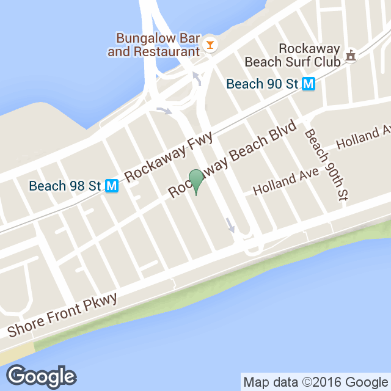

Your presence at our wedding is all we ask for. However... if you would like to get us a gift we have a nifty little wedding registry.

Our Rockaway Wedding will be held on August 28th, 2016 at approximately 4pm
| General Timeline | |
|---|---|
| 4:00 p.m. | People can start arriving and find a spot to put their blanket and have a drink and snack, we will designate an area right around Beach 102, if you can't find us call Pooja (415-910-4949) or Me'lissa (561-856-1753) |
| 4:30 p.m. | Ceremony begins |
| 5:00 p.m. | Ceremony ends and guests can have a drink and chat/relax by the ocean |
| 5:45 p.m. | Start walking to Community House |
| 6-9 p.m. | Drink, eat, and dance |
| 9- onward | You can stay and party as long as you want |

Click the map for general directions
Reception will be held at Community House. 2 min walk from beach 102
| How to get there |
|---|
| You can take a taxi/uber/lyft and have them drop you off right by the boardwalk |
| If you own a car, then you can park for free at Community House. Go there first and follow their signs. |
| If you are taking the subway transfer to the A train toward Far Rockaway and switch to the S train at Broad Channel and get off at Beach 98. Once you get off the train it's about a 7 minute walk to the beach. Google maps or Apple maps will take you straight there. |
You can wear whatever you want, but we recommend business casual. However, if you want to show up in your swimming suit we totally support that as well. We also recommend that you kick off your shoes once you hit the sand. We will be barefoot during the ceremony as well.
There will be no formal or posed photos planned, and no Photo booth. If you want a photo grab our lovely photographer, Sidney Morgan, and she will snap a photo of you and your people. Our hashtag is #ipabonita (which is our nicknames for each other).
Please call or text our lovely friend and coordinator Pooja at 415-910-4949, or our lovely friend and officiant
Your presence at our wedding is all we ask for. However... if you would like to get us a gift we have a nifty little wedding registry.